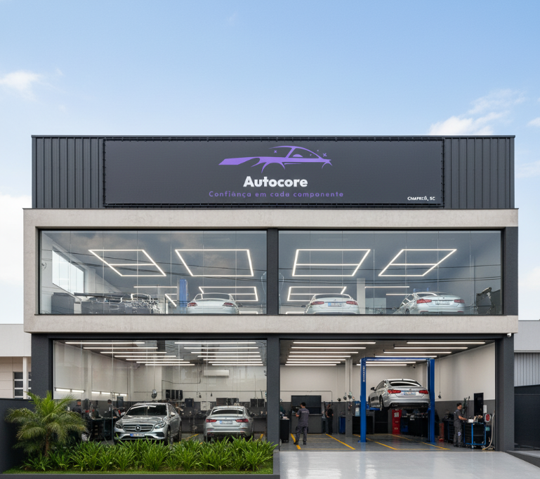

Sobre a Autocore
Nossa História
A Autocore nasceu da paixão por carros e da frustração com o mercado de reparação automotiva tradicional. Seu fundador, Lucas Magro, um engenheiro mecânico fascinado por tecnologia, sentia que faltava no mercado uma oficina que unisse o conhecimento técnico aprofundado com a transparência e a tecnologia que os carros modernos exigem.
Esse sonho se tornou realidade quando Lucas se associou a Gabriel Danieli, um mecânico com mais de 20 anos de experiência prática, mas com uma mente inquieta e sempre aberta a novas tecnologias.

Onde Estamos
Avenida Getúlio Vargas, 1580, Centro, Chapecó - SC
Nossos Valores
- Transparência e Honestidade: Diagnósticos claros e orçamentos justos.
- Qualidade e Excelência: Compromisso com o mais alto padrão em cada serviço.
- Inovação e Tecnologia: Investimento contínuo em equipamentos e conhecimento.
- Respeito e Compromisso: Tratamos cada cliente e veículo com a máxima atenção.